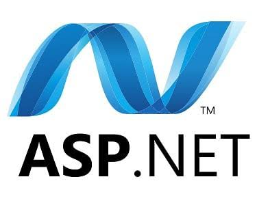

The Overview
ASP.NET is a web application framework designed and developed by Microsoft. ASP.NET is open source and a subset of the .NET Framework and successor of the classic ASP(Active Server Pages). With version 1.0 of the .NET Framework, it was first released in January 2002. So a question comes to mind that which technology we were using before the year 2002 for developing web applications and services? Answer is Classic ASP. So before .NET and ASP.NET there was Classic ASP.
To view the interview questions
Click Here